Simulate ONS for a solar sail near the L1 Lagrange point
This only simulates the orbital motion.
Contents
%-------------------------------------------------------------------------- % Copyright (c) 2021 Princeton Satellite Systems, Inc. % All rights reserved. %--------------------------------------------------------------------------
Constants
rE = Constant('equatorial radius earth'); rS = Constant('sun radius'); muSun = Constant('mu sun'); aU = Constant('au'); secToDay = 1/86400; secInYear = 365.26*86400; kEarth = 3; % SPICE numbering 1-9 are the planets, 10 is the moon earth = 1; sun = 2; % Get the defaults dRHS = RHSHelioMission;
Script control
viewersOn = true; printAll = false; % acceleration model massFuel = 0; % kg dRHS.mD = 100; % kg dRHS.uE = inf; % solar sail parameters area = 1650; % m2 optical = struct('sigmaS',[0.898 0.865],... 'sigmaD',[0.02 0.035],... 'sigmaA',[0.08 0.098]); emissivity = [0 0.3]; % Add Earth for CRTBP? plotRef = {'Sun' 'Earth'}; % Initialize the ephemeris PlanetPosJPL( 'initialize', kEarth ) % yDot = RHSCRTBP( t, y, mu ) % Initialize the state dRHS.ref = sun; jD0 = Date2JD([2024 8 3 0 0 0]); dT = 10000; tEnd = 5*2e6; % sec, 3e7 % This halo state does not take into account the sail's force [r0, mu, v0] = PlanetPosJPL( 'update', jD0 ); [rH,vH,p] = HALOState( 0.005,0.01,0,0, 'SEM', 1, 0 ); % non-dimensional rH = rH*Mag(r0); vH = vH*aU/Constant('earth year')*2*pi; % TransSEMRToHelio this was using the unit vector of the sun backwards!! % deltas from Earth position may be in ecliptic [rECI,vECI] = TransSEMRToEq( jD0, rH, vH ); x = [rECI;vECI;massFuel]; dRHS.mu(1) = mu; % set the mu for the right planet % Set the Julian date for the dynamical model dRHS.jD0 = jD0; % Simulation steps n = ceil(tEnd/dT);
Setup the camera data structure
dCam = NavigationCamera; dGPS = MeasGPS; dGS = MeasRangeGroundStation; dOM = MeasStarAngleAndChord;
Add noise
dCam.camera.sigmaXY = 1;
dCam.camera.noise = true;
dCam.namePlanet = {'Earth' 'Sun'}; % Earth?
dCam.radiusPlanet = [rE rS];
Set up the displays
TimeDisplay('initialize','ONS Simulation',n); if( viewersOn ) hNav = StarCameraViewer('initialize','Navigation Camera', n ); %#ok<*UNRCH> end % The time vector t = (0:n-1)*dT;
Setup Optical Navigation
dONS = OpticalNavigation; r = x(1:3); v = x(4:6); dONS.ukf.fData = RHSUKFHelioMission; dONS.ukf.fData.jD0 = dRHS.jD0; dONS.target = sun; % 1 or 2? dONS.ukf.fData.ref = sun; % Initialize ONS dONS = OpticalNavigation( 'initialize', dONS, r, v, dT ); meas.optical = NavigationCamera( r, dCam ); % Set up the parameters in ONS dONS.t = t(1); dONS.useUKF = true; dONS.ukf.useOptical = false; dONS.ukf.useState = false; dONS.ukf.usePos = false; dONS.ukf.f = @RHSUKFHelioMission; dONS.aBody1 = rE; dONS.aBody2 = rS; dONS.rSwitch = 1e10; % km Switching distance between the two targets % Plotting arrays xP = zeros(21,n); target = zeros(1,n); type = zeros(1,n); nStars = zeros(1,n);
Run the simulation
hLast = dT; for k = 1:n % ONS simulation TimeDisplay('update',k); % Determine if the spacecraft has hit the ground h = Mag(x(1:3))-rS; % Get data for plotting [~,~,~,acc] = RHSHelioMission(x,t(k),dRHS); % Get the location and velocity of Earth [rEarth,~,vEarth] = PlanetPosJPL( 'update', jD0 + t(k)*secToDay ); if( dRHS.ref == earth ) dCam.xPlanet = [[0;0;0] -rEarth]; rEarth = [0;0;0]; vEarth = [0;0;0]; else dCam.xPlanet = [rEarth [0;0;0]]; end % Stop on landing if( h <= 0 ) break; end % The camera boresight points at the target xCam is in the ECI frame rCam = x(1:3); vCam = x(4:6); % Needed to point the camera dONS = OpticalNavigation( 'get unit vector', dONS, rEarth, vEarth, rCam, vCam ); % Get the measurements meas.jD0 = jD0 + t(k)*secToDay; meas.state = x(1:6); meas.acc = acc; dCam.q = U2Q(dONS.uC,[0;0;1]); dOM.cam = NavigationCamera( rCam, dCam ); dOM.type = dONS.type; dOM.target = dONS.target; dOM.ref = dRHS.ref; dOM.uCamera = dONS.uCamera; dOM.aBody1 = dONS.aBody1; dOM.aBody2 = dONS.aBody2; dOM.r1 = rEarth; dOM.v1 = vEarth; meas.state = x(1:6); meas.acc = acc; % Spacecraft non-gravitational acceleration meas.gps = MeasGPS( x, dGPS ); meas.gs = MeasRangeGroundStation( x, dGS ); meas.optical = MeasStarAngleAndChord( [rCam;vCam], dOM ); % ONS dONS.cam = dOM.cam; dONS.ref = dRHS.ref; dONS.r1 = dOM.r1; dONS.v1 = dOM.v1; dONS.t = t(k); dONS = OpticalNavigation( 'update', dONS, meas, rEarth, vEarth, rCam, vCam ); target(k) = dONS.target; type(k) = dONS.type; nStars(k) = dONS.ukf.optical.nStars; % Display the cameras if( viewersOn ) StarCameraViewer('update', dOM.cam, [], hNav, dCam, k); end xP(:,k) = [x;rEarth;dRHS.thrust;dRHS.ref;h;dONS.x]; % Propagate the state uSun = -Unit(rCam); % SJT is this always true? nB = uSun; % guidance would go here, rotating off sun vector flux = SolarFlx( Mag(rCam)/aU ); [f, T, fT] = SolarPressureForce( area, nB, uSun, flux, optical, emissivity ); dRHS.thrust = fT*1e-3; %x = RK4(@RHSHelioMission,x,dT,t(k),dRHS); [x,hLast] = RK45(@RHSHelioMission,x,hLast,dT,0.1*dT,[],t(k),dRHS); end TimeDisplay('close');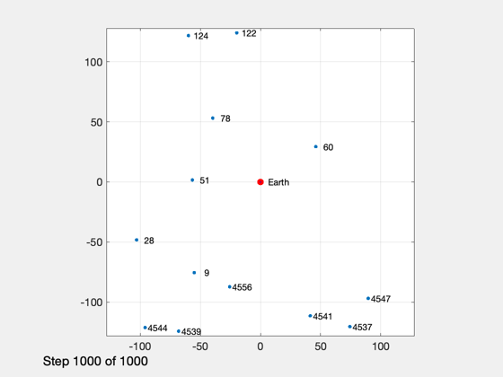
Plotting
% Shorten the vectors if it hits the ground j = 1:k; xP = xP(:,j); t = t(j); target = target(j); type = type(j); nStars = nStars(j); % Make earth and sun referenced positions rSun = zeros(3,k); rEarth = zeros(3,k); j = find(xP(14,:) == earth ); rEarth(:,j) = xP(1:3,j); rSun(:,j) = xP(8:10,j) - rEarth(:,j); j = find(xP(14,:) == sun ); rSun(:,j) = xP(1:3,j); rEarth(:,j) = xP(8:10,j) - rSun(:,j); % Sun/Mars plot HelioPlot( 3, t(end)/secInYear, jD0, xP(1:3,:), {'Spacecraft'} ) PlotSEMTraj( xP(1:3,:), 'ECI', jD0+t*secToDay ) % Time histories [t,tL] = TimeLabl(t); yL = {'x (km)' 'y (km)' 'z (km)'}; yD = {'a_x (km/s^2)' 'a_y (km/s^2)' 'a_z (km/s^2)' 'H (km)' '|a| (km/s^2)'}; yS = {'x (km)' 'y (km)' 'z (km)' 'v_x (km/s)' 'v_y (km/s)' 'v_z (km/s)'}; Plot2D(t,xP(1:6,:),tL,yS,'State'); Plot2D(t,rSun, tL,yL,'Sun Referenced Position'); Plot2D(t,rEarth,tL,yL,'Earth Referenced Position'); Plot2D(t,xP(16:21,:) - xP(1:6,:),tL,yS,'Navigation Error'); Plot2D(t,xP(16:21,:),tL,yS,'Navigation Solution'); NewFig('Targeting') subplot(3,1,1); h = plot(t,target); set(h,'linewidth',2); grid on XLabelS(tL); YLabelS('Target') set(gca,'ytick',[1 2],'yticklabel',{'Mars' 'Sun'}); subplot(3,1,2); h = plot(t,type); set(h,'linewidth',2); grid on XLabelS(tL); YLabelS('Measurement Type') set(gca,'ytick',[1 2],'yticklabel',{'Horizon' 'Center'}); subplot(3,1,3); h = plot(t,nStars); set(h,'linewidth',2); grid on XLabelS(tL); YLabelS('Stars') Figui if( printAll ) n = get(gcf,'number'); for k = 1:n PrintFig(1,4,k,sprintf('%s%d',simName,k)); end end function [rEq,vEq] = TransSEMRToEq(jD, rSEMR, vSEMR) % Transform from SEMR to equatorial, sun-centered frame mu = Constant('mu sem'); % non-dimensional system mass parameter L = Constant('au'); % length unit (1 AU) (km) T = Constant('earth year'); % time unit (Earth year) (sec) muSun = Constant('mu sun'); % km rEq = 0*rSEMR; vEq = 0*vSEMR; for k = 1:length(jD) m{k} = CEcl2Eq(jD(k)); rECI = m{k}*( rSEMR(:,k) - [1-mu; 0; 0]*L ); % position vECI = m{k}*( vSEMR(:,k) );% + [0; 1-mu; 0]*L*2*pi/T ); % velocity [u, r] = SunV2( jD(k), [0;0;0] ); % current sun vector from Earth sunDist = -u*r; % position of Earth rel to sun in km rEq(:,k) = rECI + sunDist; vDirection = m{k}*cross(-u, [0; 0; 1]); % from ecliptic to equatorial vDirection = vDirection/norm(vDirection); vMag = sqrt(muSun/L); vEq(:,k) = vECI - vDirection*vMag; end end %--------------------------------------
ans =
Figure (PlotPSS) with properties:
Number: 6
Name: 'ECI'
Color: [0 0 0]
Position: [560 528 560 420]
Units: 'pixels'
Use GET to show all properties
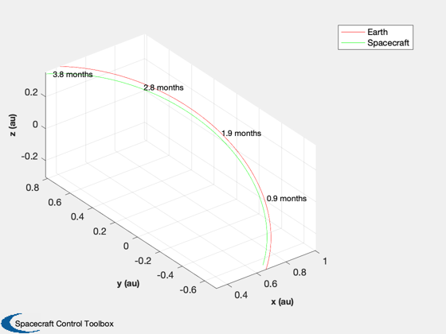 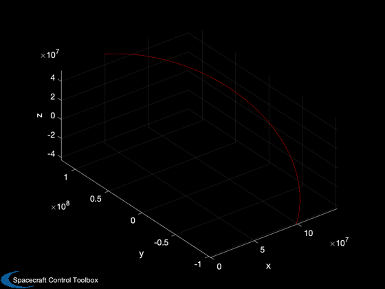 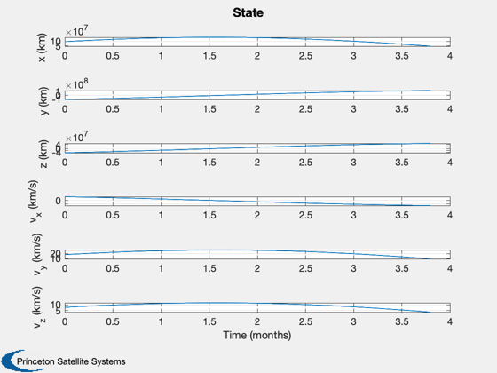 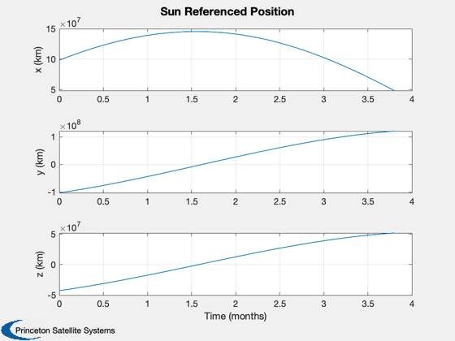 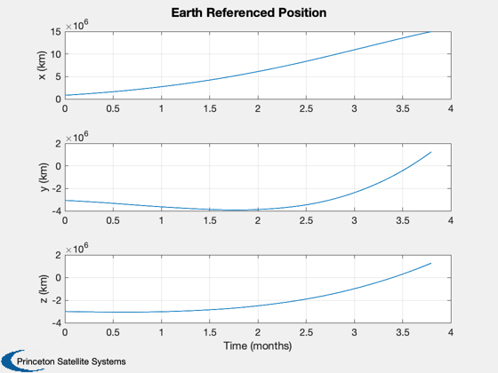  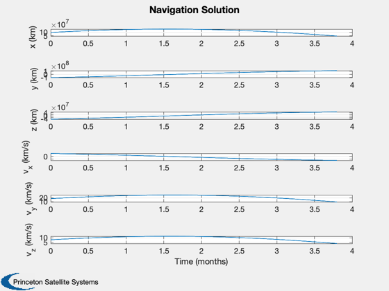 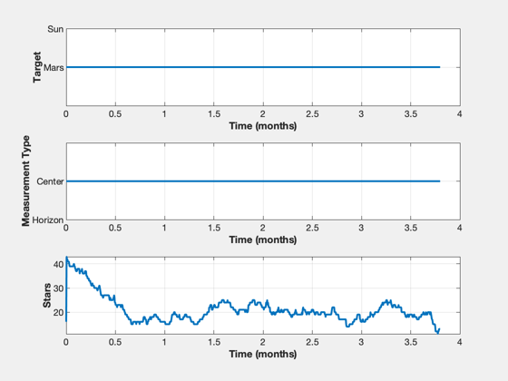 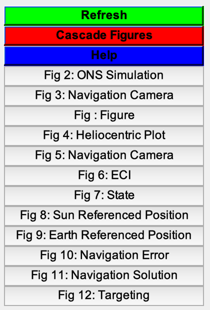
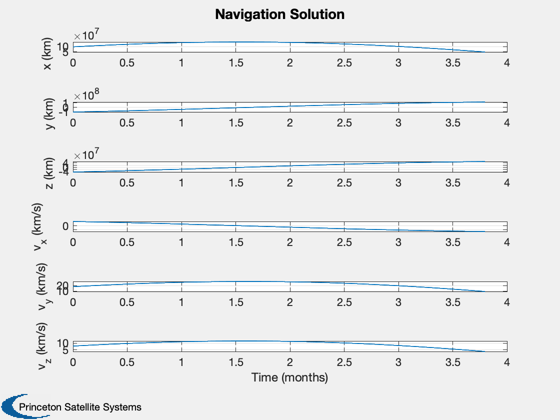 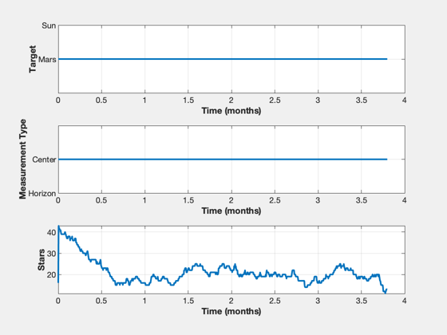 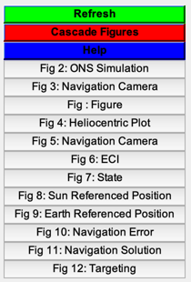